Implementing case definitions for epidemiological analysis in R
12 June 2020
episode_group.RmdIntroduction
In epidemiological analyses, an exact distinction between temporal events is not always possible. Therefore, static but reasonable cut-off are used to distinguish between events. This is an important aspect of a case definition. For example, it’s often important to distinguish between repeat positive infection results during a pathogen’s incubation period. Another example, is distinguishing between infections from a single pathogen and those by multiple pathogens within a certain period in time.
fixed_episodes(), rolling_episodes() and episode_group() provide simple but flexible ways of doing this. They group events into temporal episodes with an index event. This then allows for easy deduplication or a sub-analysis within each episode.
Uses
These functions can implement a variety of case definitions. For example, they can group events into;
- episodes where each event occurred at points in time e.g. medical diagnoses or traffic incidents
- episodes where each event occurred over periods in time e.g. hospital admission or incubation periods. See interval grouping
- episodes where the events are known to recur
- episodes where certain type of events are taken as index (reference) events. See “user defined case assignment”
- episodes with different durations depending on the type of event. See stratified grouping
Overview
An episode as produced by fixed_episodes(), rolling_episodes() or episode_group() is a set of events (dated records) within a specified period. Each episode begins with an index event and may contain duplicate or recurrent events.
-
fixed_episodes()- for"fixed"episodes that do not include periods of recurrence -
rolling_episodes()- for"rolling"episodes which can include periods of recurrence -
episode_group()- the main function behindfixed_episodes()androlling_episodes()
Implementation
Episodes, windows, case lengths and recurrence periods
Before we begin, let’s go over some terms which will pop up now and again.
-
event- a dated record i.e. single point in time -
event period-eventswith a known duration i.e. start and end points in time -
reference event/period- indexeventorevent period - The “lengths” - cut-off for distinguishing
events-
case_length- cut-off period distinguishing aneventfrom another -
recurrence_length- cut-off period distinguishing aneventfrom a recurrence of the sameevent
-
-
window- alleventswithin the samecase_lengthorrecurrence_length-
case window- alleventswithin acase_length -
recurrence window- alleventswithin arecurrence_length
-
-
episode- alleventwithin the same cut-off -case_lengthandrecurrence_length. Every overlappingwindowforms anepisode -
case event- indexeventfor the entire episode -
recurrent event- firsteventwithin arecurrence_length -
duplicate event- non-indexeventswithin anepisode -
episode tracking/grouping- the process of grouping episodes. Begins at the indexeventand proceeds forward or backward in time depending onfrom_last.
In fixed_episodes(), a window always equates to an episode. events from a different window belongs to a separate episode. In rolling_episodes(), if two or more windows overlap, they are collapsed into a larger window, indicating that the episode is still on-going or has recurred. As a result, every event belonging to both windows are now considered part of the same "rolling episode".
How to apply a case definition
epid objects
Firstly, let’s go through what episodes look like in diyar. By default, they are stored as epid objects (S4 object class). An epid object is an episode identifier with slots for useful information on each episode.
#> events data_source epid
#> 1 2019-04-01 DS1 E.1 2019-04-01 -> 2019-04-11 (C)
#> 2 2019-04-06 DS1 E.1 2019-04-01 -> 2019-04-11 (D)
#> 3 2019-04-10 DS3 E.1 2019-04-01 -> 2019-04-11 (R)
#> 4 2019-04-11 DS1 E.1 2019-04-01 -> 2019-04-11 (D)For an epid object created from a set of events sourced from different data_sources, the displayed (format.epid) components are;
-
E.1- episode identifier -
2019-04-01 -> 2019-04-11- episode duration. Only shown ifgroup_statsisTRUE -
(C)/(D)/(R)-case,duplicateandrecurrent eventsrespectively
See ?fixed_episodes for the details of every slot, including those not displayed.
to_df(epids) is a convenient accessor function for every slot in an epid object. See below.
#> epid sn wind_id wind_nm case_nm dist_from_wind dist_from_epid
#> 1 1 1 1 Case Case 0 days 0 days
#> 2 1 2 1 Case Duplicate 0 days 5 days
#> 3 1 3 2 Recurrence Recurrent 4 days 9 days
#> 4 1 4 2 Recurrence Duplicate 5 days 10 days
#> epid_interval epid_length epid_total epid_dataset
#> 1 2019-04-01 -> 2019-04-11 10 days 4 DS1,DS3
#> 2 2019-04-01 -> 2019-04-11 10 days 4 DS1,DS3
#> 3 2019-04-01 -> 2019-04-11 10 days 4 DS1,DS3
#> 4 2019-04-01 -> 2019-04-11 10 days 4 DS1,DS3cut-off - case and recurrence lengths
Your first consideration should be a cut-off point to distinguish between episodes. This is referred to as the case_length. A case_length of 5 means that; repeat events within 6 days (Time difference of 5 days) of the reference event are considered duplicates of the reference event. See below.
library(diyar)
# Events
ds <- c("01/04/2019", "03/04/2019", "13/04/2019","16/04/2019", "18/04/2019")
ds <- data.frame(date= as.Date(ds, "%d/%m/%Y"))
ds$date
#> [1] "2019-04-01" "2019-04-03" "2019-04-13" "2019-04-16" "2019-04-18"Figure 1a: fixed episodes
# 6-day (5-day difference) episodes - fixed episodes
ds$f1 <- fixed_episodes(ds$date, case_length = 5, display = F)
#> Episode grouping complete: 0 record(s) with a unique ID.
ds$f1
#> [1] "E.1 (C)" "E.1 (D)" "E.3 (C)" "E.3 (D)" "E.3 (D)"Alternatively, your cut-off can be a specific range. For example, a case_length of 12 -> 16 means that; repeat events within 13 and 17 days after the reference event are considered duplicates of the reference event.
Ranges are created by number_line(). See the number line vignette.
Figure 1b: fixed episodes with a cut-off range
rng <- number_line(12, 16); rng
#> [1] "12 -> 16"
ds$f2 <- fixed_episodes(ds$date, case_length = rng, display = F)
#> Episode grouping complete: 2 record(s) with a unique ID.
ds$f2
#> [1] "E.1 (C)" "E.2 (S)" "E.1 (D)" "E.1 (D)" "E.5 (C)"
By default, events before the 13th day are skipped. You can change skip_if_b4_lengths to FALSE, so that such events are not skipped.
Figure 1c: fixed episodes where events before the the cut-off range are not skipped
ds$f3 <- fixed_episodes(ds$date, case_length = rng, display = F, skip_if_b4_lengths = F)
#> Episode grouping complete: 0 record(s) with a unique ID.
ds$f3
#> [1] "E.1 (C)" "E.2 (C)" "E.1 (D)" "E.1 (D)" "E.2 (D)"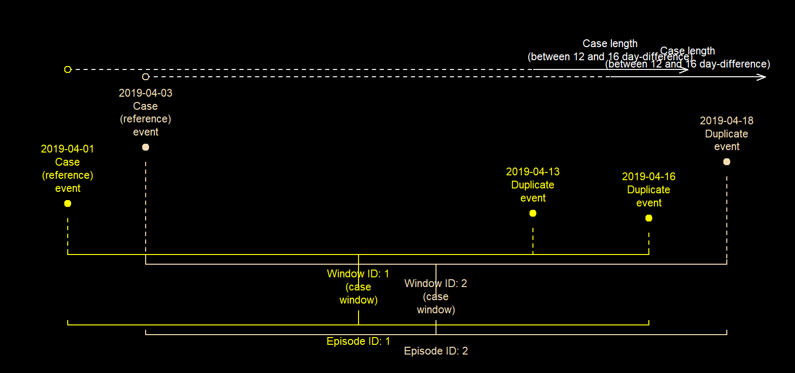
Reference events
Your next consideration should be which events will be the index event (reference events). It’s common practice for the earliest event to be taken as the reference event. However, there are times when the most recent event will be more relevant for this. For example, if a deceased patient died after a series of positive infection results, the most recent result could be considered more relevant as a reference event.
The first approach is the default behaviour for fixed_epsiodes() and rolling_episodes(). However, by changing from_last to TRUE, episode tracking will begin at the most recent event and proceed backwards in time, making that the reference event.
Figure 2: fixed episodes where episode tracking was backwards in time
ds$f4 <- fixed_episodes(ds$date, case_length = 5, from_last = T, display = F)
#> Episode grouping complete: 0 record(s) with a unique ID.
ds$f4
#> [1] "E.2 (D)" "E.2 (C)" "E.5 (D)" "E.5 (D)" "E.5 (C)"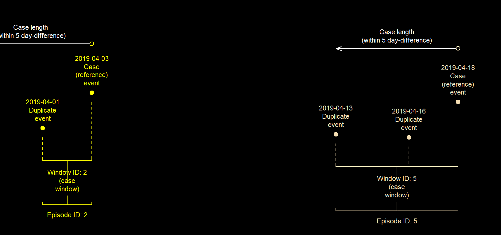
User defined reference
There can be situations when the type of event, rather than its chronological order, is more relevant in determining an index event. For example, when tracking patients with positive infection results for; human immunodeficiency virus (HIV), hepatitis B virus (HBV) and Mycobacterium tuberculosis (MyCt), you may want to track concurrent infections beginning or ending with the HIV diagnosis. The examples below show how to handle situations like this.
ds2 <- data.frame(date= as.Date(c("13/03/2020", "01/04/2020","15/08/2020",
"11/12/2020", "31/12/2020"), "%d/%m/%Y"),
diag = c("HBV","HIV","MyCt","HBV", "MyCt"), stringsAsFactors = F)
# First make the HIV diagnosis the index event
ds2$user_ord <- ifelse(ds2$diag=="HIV", 1,2)
# Then track concurrent infections up to 6 months AFTER the HIV diagnosis
ds2$ep1 <- fixed_episodes(date = ds2$date, custom_sort = ds2$user_ord, data_source = ds2$diag,
case_length = 6, episode_unit = "months", display = F)
#> Episode grouping complete: 1 record(s) with a unique ID.
# Using `data_source` populates the `epid_dataset` slot of the `epid` object.
# This is useful when you're working with different datasets
ds2$ep1_ds <- ds2$ep1@epid_dataset
# Track preceeding infections up to 6 months BEFORE the HIV diagnosis
ds2$ep2 <- fixed_episodes(date = ds2$date, custom_sort = ds2$user_ord, data_source = ds2$diag,
case_length = -6, episode_unit = "months", display = F)
#> Episode grouping complete: 3 record(s) with a unique ID.
ds2$ep2_ds <- ds2$ep2@epid_dataset
ds2
#> date diag user_ord ep1 ep1_ds ep2 ep2_ds
#> 1 2020-03-13 HBV 2 E.1 (C) HBV E.2 (D) HBV,HIV
#> 2 2020-04-01 HIV 1 E.2 (C) HIV,MyCt E.2 (C) HBV,HIV
#> 3 2020-08-15 MyCt 2 E.2 (D) HIV,MyCt E.3 (C) MyCt
#> 4 2020-12-11 HBV 2 E.4 (C) HBV,MyCt E.4 (C) HBV
#> 5 2020-12-31 MyCt 2 E.4 (D) HBV,MyCt E.5 (C) MyCtNotice that in ep1, the HIV diagnosis and the HBV diagnosis before it are not grouped into the same episode despite being within 6 months of each other. This also happens with the HIV and MyCt diagnoses in ep2. This happens because by default, episode tracking occurs in one direction of time (from_last). You can correct for this by simultaneously tracking events in both directions i.e. before and after an index event. This is either done by changing bi_direction to TRUE or by using an applicable cut-off range i.e. -6 -> 6. See the examples below.
# Track preceeding and concurrent infections up to 6 months BEFORE OR AFTER the HIV diagnosis
# Method 1a
# Track diagnoses 6 months AFTER the HIV diagnosis.
# `bi_direction` then tells the function to also check 6 months BEFORE the HIV diagnosis
ds2$ep3a <- fixed_episodes(date = ds2$date, custom_sort = ds2$user_ord, case_length = 6,
bi_direction = T, episode_unit = "months", display = F)
#> Episode grouping complete: 0 record(s) with a unique ID.
# Method 1b
# Track diagnoses 6 months BEFORE the HIV diagnosis
# bi_direction` then tells the function to also check 6 months AFTER the HIV diagnosis
ds2$ep3b <- fixed_episodes(date = ds2$date, custom_sort = ds2$user_ord, case_length = -6,
bi_direction = T, episode_unit = "months", display = F,
data_source = ds2$diag)
#> Episode grouping complete: 0 record(s) with a unique ID.
ds2$ep3_ds <- ds2$ep3b@epid_dataset
# Method 2a
# Track diagnoses 6 months BEFORE or AFTER the HIV diag with an applicable.
# There's no need for `bi_direction`.
rng <- number_line(-6, 6)
ds2$ep4 <- fixed_episodes(date = ds2$date, custom_sort = ds2$user_ord, case_length = rng, episode_unit = "months",
display = F, data_source = ds2$diag)
#> Episode grouping complete: 0 record(s) with a unique ID.
ds2$ep4_ds <- ds2$ep4@epid_dataset
# Method 2b
# Track diagnoses between 2 and 6 months AFTER the HIV diagnosis.
#` bi_direction` then tells the function to also check between 2 and 6 months BEFORE the HIV diagnosis
# Diagnoses before 2 months on either side are skipped as mentioned in the "cut-offs" section
rng2 <- number_line(2, 6)
ds2$ep5 <- fixed_episodes(date = ds2$date, custom_sort = ds2$user_ord, case_length = rng2,
bi_direction =T, episode_unit = "months", display = F)
#> Episode grouping complete: 3 record(s) with a unique ID.
ds2
#> date diag user_ord ep1 ep1_ds ep2 ep2_ds ep3a
#> 1 2020-03-13 HBV 2 E.1 (C) HBV E.2 (D) HBV,HIV E.2 (D)
#> 2 2020-04-01 HIV 1 E.2 (C) HIV,MyCt E.2 (C) HBV,HIV E.2 (C)
#> 3 2020-08-15 MyCt 2 E.2 (D) HIV,MyCt E.3 (C) MyCt E.2 (D)
#> 4 2020-12-11 HBV 2 E.4 (C) HBV,MyCt E.4 (C) HBV E.4 (C)
#> 5 2020-12-31 MyCt 2 E.4 (D) HBV,MyCt E.5 (C) MyCt E.4 (D)
#> ep3b ep3_ds ep4 ep4_ds ep5
#> 1 E.2 (D) HBV,HIV,MyCt E.2 (D) HBV,HIV,MyCt E.1 (S)
#> 2 E.2 (C) HBV,HIV,MyCt E.2 (C) HBV,HIV,MyCt E.2 (C)
#> 3 E.2 (D) HBV,HIV,MyCt E.2 (D) HBV,HIV,MyCt E.2 (D)
#> 4 E.4 (C) HBV,MyCt E.4 (C) HBV,MyCt E.4 (C)
#> 5 E.4 (D) HBV,MyCt E.4 (D) HBV,MyCt E.5 (C)When different events have the same level of preference - custom_sort values, their chronological order are used to break ties. This will be the earliest or most recent event depending on from_last. Alternatively, you can break such ties with additional levels of custom_sort.
Using infections - a sample dataset for positive urinary tract infections (UTI), bloodstream infections (BSI) and respiratory tract infections (RTI), we can see examples of episode tracking using 2 and 3 levels of custom_sort.
dbf <- infections[c("date", "infection")]
# 3 levels: "UTI" > "BSI" > "RTI"
dbf$c_sort1 <- ifelse(dbf$infection == "UTI", 1, ifelse(dbf$infection == "BSI", 2, 3))
# 2 levels: "UTI" > ("BSI" OR "RTI")
dbf$c_sort2 <- ifelse(dbf$infection == "UTI", 1, 2)
# 2 levels: "BSI" > ("UTI" OR "RTI")
dbf$c_sort3 <- ifelse(dbf$infection == "BSI", 1, 2)
dbf$ep_1 <- fixed_episodes(dbf$date, case_length = 15, data_source = dbf$infection,
custom_sort = dbf$c_sort1, display = F)
#> Episode grouping complete: 3 record(s) with a unique ID.
dbf$ep_2 <- fixed_episodes(dbf$date, case_length = 15, data_source = dbf$infection,
custom_sort = dbf$c_sort2, display = F)
#> Episode grouping complete: 2 record(s) with a unique ID.
dbf$ep_3 <- fixed_episodes(dbf$date, case_length = 15, data_source = dbf$infection,
custom_sort = dbf$c_sort3, display = F)
#> Episode grouping complete: 2 record(s) with a unique ID.
dbf
#> date infection c_sort1 c_sort2 c_sort3 ep_1 ep_2 ep_3
#> 1 2018-04-01 BSI 2 2 1 E.01 (C) E.1 (C) E.01 (C)
#> 2 2018-04-07 UTI 1 1 2 E.02 (C) E.2 (C) E.01 (D)
#> 3 2018-04-13 UTI 1 1 2 E.02 (D) E.2 (D) E.01 (D)
#> 4 2018-04-19 UTI 1 1 2 E.02 (D) E.2 (D) E.04 (C)
#> 5 2018-04-25 BSI 2 2 1 E.05 (C) E.5 (C) E.05 (C)
#> 6 2018-05-01 UTI 1 1 2 E.06 (C) E.6 (C) E.05 (D)
#> 7 2018-05-07 BSI 2 2 1 E.06 (D) E.6 (D) E.05 (D)
#> 8 2018-05-13 BSI 2 2 1 E.06 (D) E.6 (D) E.08 (C)
#> 9 2018-05-19 RTI 3 2 2 E.09 (C) E.9 (C) E.08 (D)
#> 10 2018-05-25 RTI 3 2 2 E.09 (D) E.9 (D) E.08 (D)
#> 11 2018-05-31 BSI 2 2 1 E.11 (C) E.9 (D) E.11 (C)Recurrent events and periods of recurrence
Another important consideration for a case definition should be if the events recurs. For example, if a relapse of the same disease occurs after a successful treatment therapy, it may be more relevant to treat this as the same episode of the initial event.
fixed_episodes() will treat these as a separate episodes while rolling_episodes() can treat them as the same episode.
All arguments in fixed_episodes() (including case_length) function the same way as in rolling_episodes(). However, the recurrence_length argument, which is unique to rolling_episodes(), provides the cut-off period for recurrent events. For example, a recurrence_length of 10 means that; repeat events within 11 days of the last duplicate event (of the initial index event) are considered a recurrence of the index event.
If recurrence_length is not supplied, it’s assumed to be the same as the case_length.
Figure 3a: rolling episodes
# 6-day (5-day difference) episodes with 11-days recurrence periods - rolling episodes
ds$r1 <- rolling_episodes(ds$date, case_length = 5, recurrence_length = 10, display = F)
#> Episode grouping complete: 0 record(s) with a unique ID.
ds$r1
#> [1] "E.1 (C)" "E.1 (D)" "E.1 (R)" "E.1 (R)" "E.1 (D)"Similarly, for recurrence_length, your cut-off can be a range. For example, a recurrence_length of 13 -> 15 means that; repeat events within 14 and 16 days after the last duplicate event are considered a recurrence of the reference event.
Figure 3b: rolling episodes with a cut-off range
rng <- number_line(13, 15); rng
#> [1] "13 -> 15"
ds$r2 <- rolling_episodes(ds$date, case_length = 5, recurrence_length = rng, display = F)
#> Episode grouping complete: 1 record(s) with a unique ID.
ds$r2
#> [1] "E.1 (C)" "E.1 (D)" "E.3 (S)" "E.1 (R)" "E.1 (D)"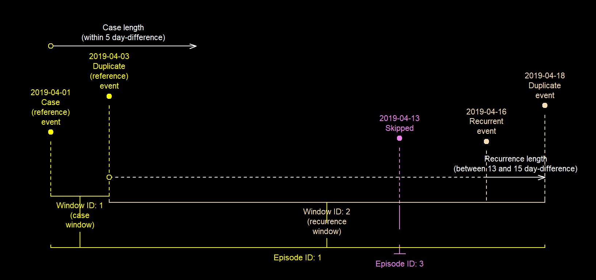
Events before the 14th are skipped by default however, you can also change skip_if_b4_lengths to FALSE, so that such events are not skipped.
Figure 3c: rolling episodes where events before the the cut-off range are not skipped
rng <- number_line(13, 15); rng
#> [1] "13 -> 15"
ds$r3 <- rolling_episodes(ds$date, case_length = 5, recurrence_length = rng,
skip_if_b4_lengths = F, display = F)
#> Episode grouping complete: 1 record(s) with a unique ID.
ds$r3
#> [1] "E.1 (C)" "E.1 (D)" "E.3 (C)" "E.1 (R)" "E.1 (D)"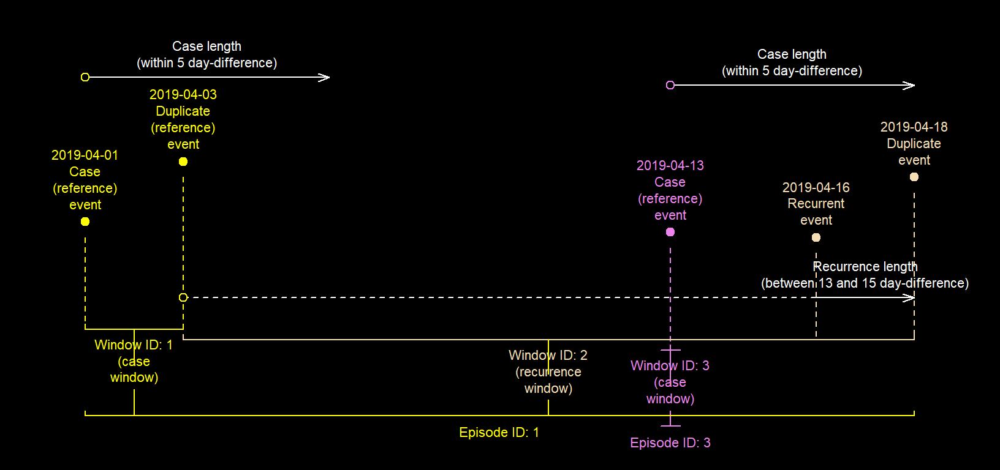
Index events for periods of recurrence
Unlike "fixed episodes", each "rolling episode" has at least two index events - one for the whole episode and one for each recurrence period. By default, the last event of the previous window is the index event for the next recurrence period. However, you can change recurrence_from_last to FALSE, so that the first event in the previous window is used instead. See a demonstration of this below.
If your case_length and recurrence_length are the same, which is the default behaviour, you’ll have essentially created a "fixed episode".
df <- c("01/04/2019", "11/04/2019", "16/04/2019","21/04/2019", "07/05/2019")
df <- data.frame(date= as.Date(df, "%d/%m/%Y"))
# 15-day fixed episodes
df$f1 <- fixed_episodes(df$date, case_length = 14, display = F)
#> Episode grouping complete: 1 record(s) with a unique ID.
# 15-day rolling episodes with 15-day recurrence periods
# Since the first event is the reference event for the next recurrence window and,
# the recurrence_length is the same the case_length (14-day difference),
# the result will be the same as the 15-day fixed-episode (above)
df$r1 <- rolling_episodes(df$date, case_length = 14, recurrence_from_last = F,
to_s4 = T, display = F)
#> Episode grouping complete: 1 record(s) with a unique ID.
df
#> date f1 r1
#> 1 2019-04-01 E.1 (C) E.1 (C)
#> 2 2019-04-11 E.1 (D) E.1 (D)
#> 3 2019-04-16 E.3 (C) E.3 (C)
#> 4 2019-04-21 E.3 (D) E.3 (D)
#> 5 2019-05-07 E.5 (C) E.5 (C)
# Identical
all(df$f1==df$r1)
#> [1] TRUEFigure 4a: Last event in a window taken as the reference event for the next recurrence window (default)
df$r2 <- rolling_episodes(df$date, case_length = 14, recurrence_length = 16, display = F)
#> Episode grouping complete: 0 record(s) with a unique ID.
df$r2
#> [1] "E.1 (C)" "E.1 (D)" "E.1 (R)" "E.1 (D)" "E.1 (R)"Figure 4b: First event in a window taken as the reference event for the next recurrence window
df$r3 <- rolling_episodes(df$date, case_length = 14, recurrence_length = 16,
recurrence_from_last = F, display = F)
#> Episode grouping complete: 0 record(s) with a unique ID.
df$r3
#> [1] "E.1 (C)" "E.1 (D)" "E.1 (R)" "E.1 (R)" "E.1 (R)"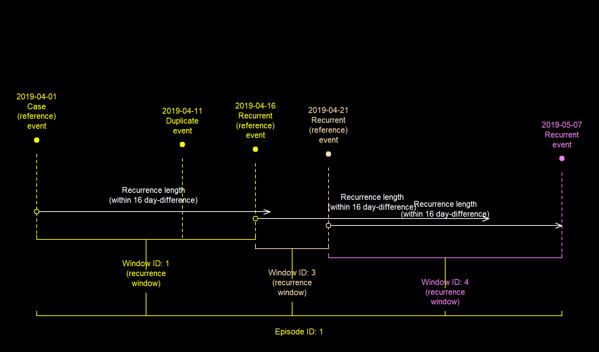
Case windows for both case and recurrent events
You can use the case_for_recurrence argument to specify that both case and recurrence events should have a case window. The default behaviour is that only case events have a case window. See a demonstration of this below.
The wind_id slot shows the window for every event, while wind_nm slot shows type of window it is.
Example 1
df <- c("01/04/2019", "11/04/2019", "16/04/2019","21/04/2019","25/04/2019", "07/05/2019")
df <- data.frame(date= as.Date(df, "%d/%m/%Y"))Figure 5a: Case windows for case events only (default)
df$r4 <- rolling_episodes(df$date, case_length = 10, display = F)
#> Episode grouping complete: 1 record(s) with a unique ID.
df$r4
#> [1] "E.1 (C)" "E.1 (D)" "E.1 (R)" "E.1 (D)" "E.1 (R)" "E.6 (C)"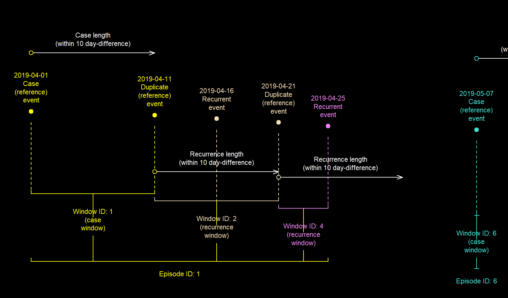
Figure 5b: Case windows for case and recurrence events
df$r5 <- rolling_episodes(df$date, case_length = 10, case_for_recurrence = T,
to_s4 = T, display = F)
#> Episode grouping complete: 1 record(s) with a unique ID.
df$r5
#> [1] "E.1 (C)" "E.1 (D)" "E.1 (R)" "E.1 (D)" "E.1 (D)" "E.6 (C)"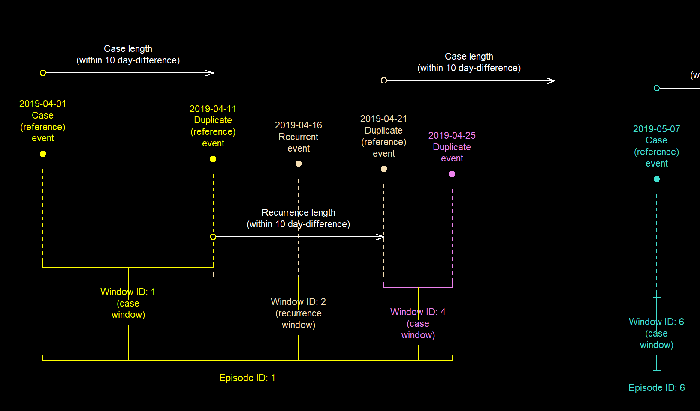
Example 2.
date <- seq.Date(as.Date("01/04/2019", "%d/%m/%Y"),
as.Date("21/04/2019","%d/%m/%Y"),
by="3 day")
# Example 2
df2 <- data.frame(date = date, sn = 1:length(date))
# dates
df2$date
#> [1] "2019-04-01" "2019-04-04" "2019-04-07" "2019-04-10" "2019-04-13"
#> [6] "2019-04-16" "2019-04-19"Figure 5c: Case windows for case events only (default)
df2$r1 <- rolling_episodes(df2$date, case_length = 6, recurrence_length = 4, display = F, sn=df2$sn)
#> Episode grouping complete: 0 record(s) with a unique ID.
df2$r1
#> [1] "E.1 (C)" "E.1 (D)" "E.1 (D)" "E.1 (R)" "E.1 (R)" "E.1 (R)" "E.1 (R)"Figure 5d: Case windows for case and recurrence events
df2$r2 <- rolling_episodes(df2$date, case_length = 6, recurrence_length = 4,
case_for_recurrence = T, display = F, sn=df2$sn)
#> Episode grouping complete: 0 record(s) with a unique ID.
df2$r1
#> [1] "E.1 (C)" "E.1 (D)" "E.1 (D)" "E.1 (R)" "E.1 (R)" "E.1 (R)" "E.1 (R)"
Notice that in the 4 examples, all events have been assigned to the same episode but the number of recurrent events differ.
Number of recurrence periods and episodes
Some case definitions may only require you to track the first n-number of episodes, or those that only recurred n-number of times. You can incorporate these requirements into your analysis using episodes_max and rolls_max (only applicable to rolling_episodes()). When each strata (see stratified grouping) of the dataset has the maximum number of episodes (episodes_max), subsequent events are skipped and assigned unique episode IDs. The default option for episodes_max is Inf i.e. continue until every event has been grouped into episodes. See the examples below.
data("infections_3");
dbs <- infections_3[c("pid","date")];
# dates
dbs$date
#> [1] "2019-04-01" "2019-04-02" "2019-04-03" "2019-04-04" "2019-04-05"
#> [6] "2019-04-06" "2019-04-07" "2019-04-08" "2019-04-09" "2019-04-10"
#> [11] "2019-04-11"Figure 6a: Maximum of one fixed episode per strata
dbs$eps_1 <- fixed_episodes(strata = dbs$pid, date = dbs$date, case_length = 3, display = F,
episodes_max = 1)
#> 7 record(s); 7 skipped
#> Episode grouping complete: 7 record(s) with a unique ID.
dbs$eps_1
#> [1] "E.01 (C)" "E.01 (D)" "E.01 (D)" "E.01 (D)" "E.05 (S)" "E.06 (S)"
#> [7] "E.07 (S)" "E.08 (S)" "E.09 (S)" "E.10 (S)" "E.11 (S)"Figure 6b: Maximum of two fixed episodes per strata
dbs$eps_2 <- fixed_episodes(strata = dbs$pid, date = dbs$date, case_length = 3, display = FALSE, episodes_max = 2)
#> 3 record(s); 3 skipped
#> Episode grouping complete: 3 record(s) with a unique ID.
dbs$eps_2
#> [1] "E.01 (C)" "E.01 (D)" "E.01 (D)" "E.01 (D)" "E.05 (C)" "E.05 (D)"
#> [7] "E.05 (D)" "E.05 (D)" "E.09 (S)" "E.10 (S)" "E.11 (S)"
rolls_max is the maximum number of times an event can recur. When rolls_max is reached, the episode ends. A new one then begins if the number of episodes in that strata is less than episode_max. The default option for rolls_max is Inf i.e. check until there are no more events within the recurrence period of the reference event. See the examples below.
Figure 6c: Infinite recurrence periods per episode per strata (default)
dbs$eps_4 <- rolling_episodes(strata = dbs$pid, date =dbs$date, case_length = 2,display = F)
#> Episode grouping complete: 0 record(s) with a unique ID.
dbs$eps_4
#> [1] "E.1 (C)" "E.1 (D)" "E.1 (D)" "E.1 (R)" "E.1 (D)" "E.1 (R)" "E.1 (D)"
#> [8] "E.1 (R)" "E.1 (D)" "E.1 (R)" "E.1 (D)"Figure 6d: Maximum of one recurrence period per episode per strata
dbs$eps_6 <- rolling_episodes(strata = dbs$pid, date =dbs$date, case_length = 2,display = F,
rolls_max = 1)
#> Episode grouping complete: 1 record(s) with a unique ID.
dbs$eps_6
#> [1] "E.01 (C)" "E.01 (D)" "E.01 (D)" "E.01 (R)" "E.01 (D)" "E.06 (C)"
#> [7] "E.06 (D)" "E.06 (D)" "E.06 (R)" "E.06 (D)" "E.11 (C)"Note that if case_for_recurrence is TRUE, after checking for recurrence in the last recurrence period, the function will also check for duplicates within the case window of the last recurrent event. See below.
Figure 6e: Maximum of one recurrence period per episode per strata when case_for_recurrence is TRUE
dbs$eps_7 <- rolling_episodes(strata = dbs$pid, date =dbs$date, case_length = 2,display = F,
rolls_max = 1, case_for_recurrence = T)
#> Episode grouping complete: 0 record(s) with a unique ID.
dbs$eps_7
#> [1] "E.1 (C)" "E.1 (D)" "E.1 (D)" "E.1 (R)" "E.1 (D)" "E.1 (D)" "E.1 (D)"
#> [8] "E.8 (C)" "E.8 (D)" "E.8 (D)" "E.8 (R)"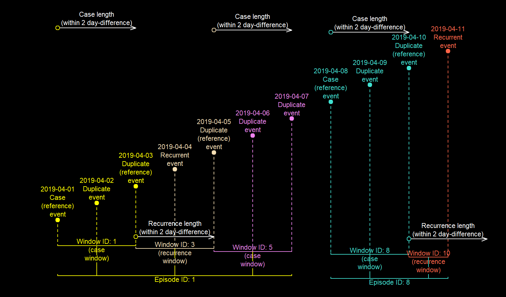
Interval grouping
Some case definitions can involve events that occur over a period of time and not a single point in time e.g hospital admissions. fixed_episodes() and rolling_episodes() can be used to track such event periods into episodes. This type of episode grouping is recommended when the end point of an event is known. For example, it’s near impossible to know the exact point in time an individual diagnosed with the common cold recovers however, it’s a reasonable assumption that a second diagnosis 3 months after is not the same one that was diagnosed initially. For situations like this, the recommend approach is to use the methods we’ve covered so far. In contrast, hospital admissions typically have recorded admission and discharge times or dates and so interval grouping is recommended. This being said, in several situations both approaches can be used interchangeably. See below.
# Dates
dates <- seq(as.Date("01/04/2019", "%d/%M/%Y"), as.Date("20/04/2019", "%d/%M/%Y"), "4 days")
case_len <- 4
# Periods
periods <- number_line(dates, dates + 4)
dates
#> [1] "2019-06-01" "2019-06-05" "2019-06-09" "2019-06-13" "2019-06-17"
periods
#> [1] "2019-06-01 -> 2019-06-05" "2019-06-05 -> 2019-06-09"
#> [3] "2019-06-09 -> 2019-06-13" "2019-06-13 -> 2019-06-17"
#> [5] "2019-06-17 -> 2019-06-21"
# Track fixed episodes from events with a 5 day cut-off
mth1 <- fixed_episodes(date = dates, case_length = 4, display = F)
#> Episode grouping complete: 1 record(s) with a unique ID.
# Track fixed episode from periods that are 5 days long
mth2 <- fixed_episodes(date = periods, case_length =0, display = F)
#> Episode grouping complete: 1 record(s) with a unique ID.
# Same results
mth1; mth2
#> [1] "E.1 (C)" "E.1 (D)" "E.3 (C)" "E.3 (D)" "E.5 (C)"
#> [1] "E.1 (C)" "E.1 (D)" "E.3 (C)" "E.3 (D)" "E.5 (C)"
# Track rolling episodes from events using a 5 day cut-off
mth3 <- rolling_episodes(date = dates, case_length = 4, display = F)
#> Episode grouping complete: 0 record(s) with a unique ID.
# Track rolling episode from periods that are 5 days long
mth4 <- rolling_episodes(date = periods, case_length =0, display = F)
#> Episode grouping complete: 0 record(s) with a unique ID.
# Same results
mth3; mth4
#> [1] "E.1 (C)" "E.1 (D)" "E.1 (R)" "E.1 (R)" "E.1 (R)"
#> [1] "E.1 (C)" "E.1 (D)" "E.1 (R)" "E.1 (R)" "E.1 (R)"In interval grouping, when case_length is 0, event periods that overlap with the index event period are grouped together as one episode. However, if case_length is > 0, only those within n-days (or any time unit) after the end_point() of the index event period are grouped together. See below.
hos_admin <- diyar::hospital_admissions
hos_admin$admin_period <- number_line(hos_admin$admin_dt, hos_admin$discharge_dt)
# Hospital stay
hos_admin$admin_period
#> [1] "2019-01-01 == 2019-01-01" "2019-01-01 -> 2019-01-10"
#> [3] "2019-01-10 -> 2019-01-13" "2019-01-05 -> 2019-01-06"
#> [5] "2019-01-05 -> 2019-01-15" "2019-01-07 -> 2019-01-15"
#> [7] "2019-01-04 -> 2019-01-13" "2019-01-20 -> 2019-01-30"
#> [9] "2019-01-26 -> 2019-01-31" "2019-01-01 -> 2019-01-10"
#> [11] "2019-01-20 -> 2019-01-30"Figure 7a: Tracking periods of hospital stay (admission -> discharge)
hs_epids_a <- fixed_episodes(date=hos_admin$admin_period, case_length = 0,
display=F, group_stats=T)
#> Episode grouping complete: 0 record(s) with a unique ID.Figure 7b: Tracking periods of hospital stay up to 20 days after the first discharge
hs_epids_b <- fixed_episodes(date=hos_admin$admin_period, case_length = 20,
display=F, group_stats=T)
#> Episode grouping complete: 0 record(s) with a unique ID.
Figure 7c: Tracking periods of continuous hospital stay i.e. re-admission within 15 days
hs_epids_c <- rolling_episodes(date=hos_admin$admin_period, case_length = 0,
recurrence_length=15, display=F, group_stats=T)
#> Episode grouping complete: 0 record(s) with a unique ID.
There are 6 ways event periods can overlap (overlap_methods). These are "exact", "across", "inbetween", "chain", "aligns_start" and "aligns_end". These are covered in more detail in an accompanying vignette. Only event periods that overlap by a specified overlap_method will be grouped into the same episode. You can use any combination of the 6 methods but the default option is to use all 6. See below for a demonstration of this.
The 6 overlap_methods are mutually exclusive.
There are 2 convenience methods - "none" and "overlap". These are mutually inclusive with any the other 6.
# wrapper function to use with lapply
epi_grp_func <- function(x){
epids <- fixed_episodes(date=hos_admin$admin_period,
sn=hos_admin$rd_id,
case_length = 0,
overlap_methods = x,
display = FALSE,
to_s4 = TRUE,
group_stats = TRUE)
# for the prurpose of this demonstration, limit to overlapped periods
epids[epids@epid_total>1]
}
# Methods
methods <- list(
# Identical intervals
exact = "exact",
# Overlapping intervals
across= "across",
# Intervals with aligned start points
aligns_start = "aligns_start",
# Intervals with aligned end points
aligns_end = "aligns_end",
# Chained intervals
chain = "chain",
# Intervals occurring completely within others
inbetween = "inbetween",
# Chained intervals and those occurring completely within others
cb1 = "chain|inbetween",
# Chained intervals, identical intervals and those occurring completely within others
cb2 = "exact|chain|inbetween",
# Chained intervals, overlapping intervals and those with aligned end point
cb3 = "across|chain|aligns_end"
)
epids <- lapply(methods, epi_grp_func)
#> Episode grouping complete: 7 record(s) with a unique ID.
#> Episode grouping complete: 5 record(s) with a unique ID.
#> Episode grouping complete: 7 record(s) with a unique ID.
#> Episode grouping complete: 7 record(s) with a unique ID.
#> Episode grouping complete: 9 record(s) with a unique ID.
#> Episode grouping complete: 7 record(s) with a unique ID.
#> Episode grouping complete: 8 record(s) with a unique ID.
#> Episode grouping complete: 5 record(s) with a unique ID.
#> Episode grouping complete: 4 record(s) with a unique ID.
names(epids) <- names(methods)
# Results
epids["chain"]
#> $chain
#> [1] "E.2 2019-01-01 -> 2019-01-13 (C)" "E.2 2019-01-01 -> 2019-01-13 (D)"
epids["cb2"]
#> $cb2
#> [1] "E.2 2019-01-01 -> 2019-01-13 (C)" "E.2 2019-01-01 -> 2019-01-13 (D)"
#> [3] "E.2 2019-01-01 -> 2019-01-13 (D)" "E.8 2019-01-20 -> 2019-01-30 (C)"
#> [5] "E.2 2019-01-01 -> 2019-01-13 (D)" "E.8 2019-01-20 -> 2019-01-30 (D)"Only showing events grouped into episodes
Figure 8a: Grouped episodes when considering only “exact” overlap method 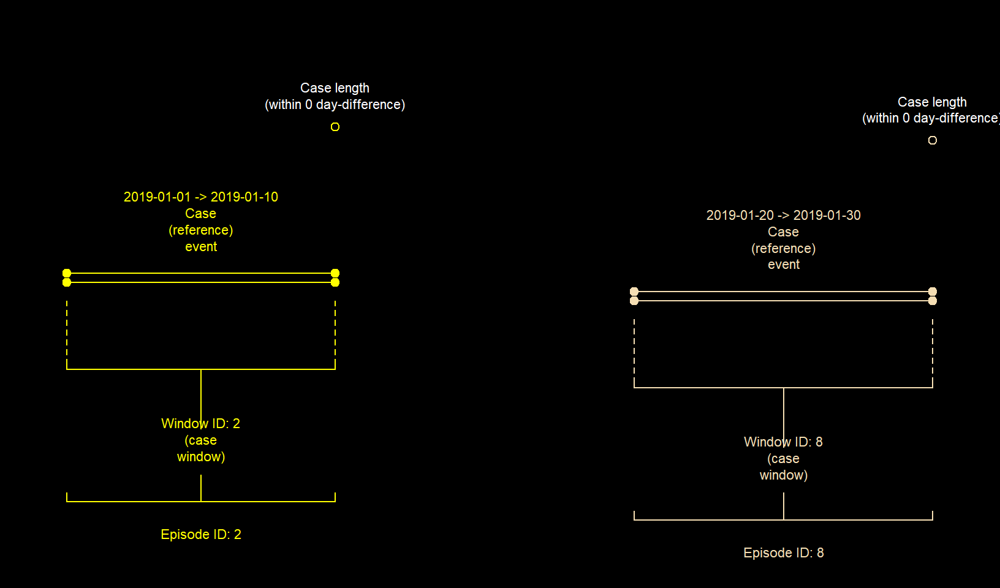
Figure 8b: Grouped episodes when considering only “chain” overlap method 
Figure 8c: Grouped episodes when considering “chain” or “inbetween” overlap method 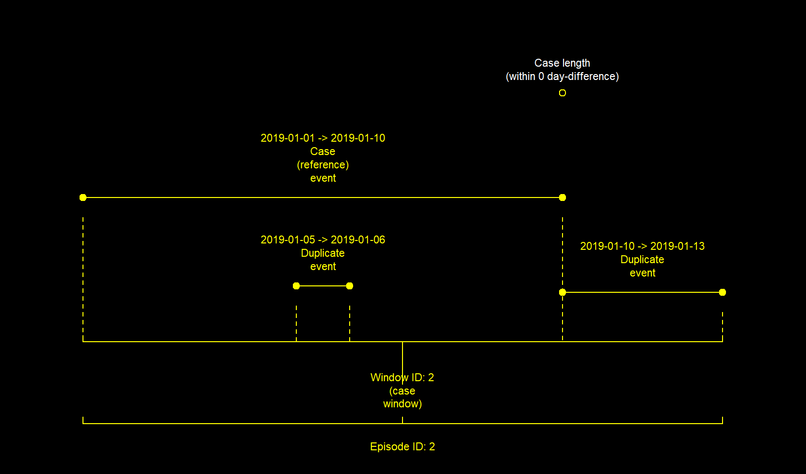
Case and recurrence lengths in interval grouping
pa <- c("28/03/2019", "01/04/2019", "03/04/2019", "07/04/2019","12/04/2019")
pz <- c("31/03/2019", "10/04/2019", "05/04/2019", "09/04/2019","13/04/2019")
pa <- as.Date(pa, "%d/%m/%Y")
pz <- as.Date(pz, "%d/%m/%Y")
periods <- number_line(pa, pz)
periods
#> [1] "2019-03-28 -> 2019-03-31" "2019-04-01 -> 2019-04-10"
#> [3] "2019-04-03 -> 2019-04-05" "2019-04-07 -> 2019-04-09"
#> [5] "2019-04-12 -> 2019-04-13"As seen earlier, positive “length” means that; event periods overlapping with the index event period and those within n-days AFTER the end_point() of the index event period will be grouped into the same episode. See another example below.
Figure 9a: Fixed episodes with a case_length of 6
eps_a <- fixed_episodes(periods, case_length =6, group_stats = T, display = F)
#> Episode grouping complete: 0 record(s) with a unique ID.
eps_a
#> [1] "E.1 2019-03-28 -> 2019-04-10 (C)" "E.1 2019-03-28 -> 2019-04-10 (D)"
#> [3] "E.1 2019-03-28 -> 2019-04-10 (D)" "E.4 2019-04-07 -> 2019-04-13 (C)"
#> [5] "E.4 2019-04-07 -> 2019-04-13 (D)"In contrast, a negative “length” means that; only event periods within n-days BEFORE the end_point() of the index event period will be grouped into the same episode.
Figure 9b: Fixed episodes with a case_length of -2
eps_b <- fixed_episodes(periods, case_length =-2, group_stats = T, display = F)
#> Episode grouping complete: 3 record(s) with a unique ID.
eps_b
#> [1] "E.1 2019-03-28 -> 2019-03-31 (C)" "E.2 2019-04-01 -> 2019-04-10 (C)"
#> [3] "E.3 2019-04-03 -> 2019-04-05 (S)" "E.2 2019-04-01 -> 2019-04-10 (D)"
#> [5] "E.5 2019-04-12 -> 2019-04-13 (C)"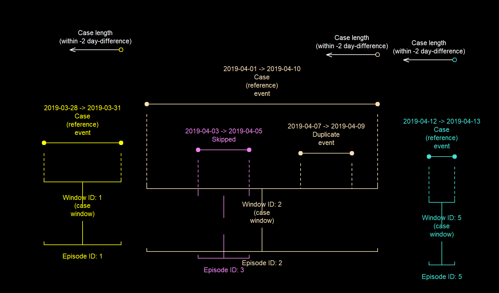
By default, overlapping periods that are outside the 2-day periods are also groupped together. This can be changed with include_initial_period. See below.
Figure 9c: Fixed episodes with a case_length of -2
eps_c <- fixed_episodes(periods, case_length =-2, group_stats = T, display = F,
include_index_period = F)
#> Episode grouping complete: 3 record(s) with a unique ID.
eps_c
#> [1] "E.1 2019-03-28 -> 2019-03-31 (C)" "E.2 2019-04-01 -> 2019-04-10 (C)"
#> [3] "E.3 2019-04-03 -> 2019-04-05 (S)" "E.2 2019-04-01 -> 2019-04-10 (D)"
#> [5] "E.5 2019-04-12 -> 2019-04-13 (C)"
Figure 9d: Fixed episodes with a case_length of -6
eps_d <- fixed_episodes(periods, case_length =-6, group_stats = T, display = F)
#> Episode grouping complete: 2 record(s) with a unique ID.
eps_d
#> [1] "E.1 2019-03-28 -> 2019-03-31 (C)" "E.2 2019-04-01 -> 2019-04-10 (C)"
#> [3] "E.2 2019-04-01 -> 2019-04-10 (D)" "E.2 2019-04-01 -> 2019-04-10 (D)"
#> [5] "E.5 2019-04-12 -> 2019-04-13 (C)"Stratified episode grouping
In practice, you’ll want to track episodes separately for groups (strata) such as patients, pathogens, sources of infection or any combination of these. This means that episodes from one patient will be different from other patients, or episodes of HIV diagnoses will be different those of HBV diagnoses.
episodes from different strata can have a different case_lengths and/or recurrence_lengths.
record_group() is useful for creating group identifiers which can then be used as a strata. See the record group vignette for further details.
As an example, using the infections dataset, a case definition may specify the following;
- UTI and BSI diagnoses are considered different
episodesregardless of when they occur - UTI
episodeshave a cut-off of 8 days and a recurrence period of 31 days - BSI
episodeshave a cut-off of 15 days and no recurrence period
By adding the infection column to the strata argument, "UTI" and "BSI" diagnoses will not be grouped together under the same episode. Furthermore, the case_length and recurrence_length for each will be different as specified in the epi and recur columns respectively.
dbs <- diyar::infections[c("date","infection")]
dbs <- dbs[dbs$infection%in% c("UTI","BSI"),]
dbs$epi <- ifelse(dbs$infection=="UTI", 7, 14)
dbs$recur <- ifelse(dbs$infection=="UTI", 30, 0)
dbs$epids <- rolling_episodes(date=dbs$date, case_length =dbs$epi, to_s4 =TRUE,
strata = dbs$infection, recurrence_length = dbs$recur,
display = FALSE, group_stats = TRUE)
#> Episode grouping complete: 3 record(s) with a unique ID.
dbs
#> date infection epi recur epids
#> 1 2018-04-01 BSI 14 0 E.1 2018-04-01 == 2018-04-01 (C)
#> 2 2018-04-07 UTI 7 30 E.2 2018-04-07 -> 2018-05-01 (C)
#> 3 2018-04-13 UTI 7 30 E.2 2018-04-07 -> 2018-05-01 (D)
#> 4 2018-04-19 UTI 7 30 E.2 2018-04-07 -> 2018-05-01 (R)
#> 5 2018-04-25 BSI 14 0 E.5 2018-04-25 -> 2018-05-07 (C)
#> 6 2018-05-01 UTI 7 30 E.2 2018-04-07 -> 2018-05-01 (D)
#> 7 2018-05-07 BSI 14 0 E.5 2018-04-25 -> 2018-05-07 (D)
#> 8 2018-05-13 BSI 14 0 E.8 2018-05-13 == 2018-05-13 (C)
#> 11 2018-05-31 BSI 14 0 E.9 2018-05-31 == 2018-05-31 (C)Stratified grouping is a faster and easier alternative to performing separate analyses for each subset (strata) of the dataset. However, if you must perform these separately, I recommend using a familiar sn and changing to_s4 to FALSE. The former is so that you can easily link each episode back to the original dataset, while the latter is because binding S4 objects in my personal opinion is a pain, so to_s4 = FALSE changes the epid objects to data.frames.
to_s4() and to_df() are convenience functions to change epid, pid, number_line S4 class objects to data.frames and vice versa.
Sub-strata
Sub-strata are when events within the same strata have different cut-offs. The case definition below demonstrates how this could be beneficial.
- UTI and BSI diagnoses are considered different
episodesregardless of when they occur - UTI diagnoses have a cut-off of 8 days and a recurrence period of 31 days
- BSI diagnoses have a cut-off of 15 days if not treated but 5 days if
treated. In both situations there is no recurrence period. - RTI diagnoses have a cut-off of of 29 days and a recurrence period of 6 days
In this example, whether or not the infection is treated should be viewed as the sub-strata i.e. in a patient (strata), an episode is expected to last longer if it’s not treated.
dbs <- diyar::infections_4
dbs$epids <- episode_group(dbs, sn=rid, strata=c(pid, organism, source), date=date,
case_length =epi, episode_type = "rolling", recurrence_length = recur,
display = FALSE)
#> Episode grouping complete: 3 record(s) with a unique ID.
dbs
#> rid date pid organism source treated epi recur epids
#> 1 1 2019-04-01 1 E. coli UTI - 7 30 E.01 (C)
#> 2 2 2019-04-06 1 E. coli UTI - 7 30 E.01 (D)
#> 3 3 2019-04-11 1 E. coli BSI Y 4 0 E.03 (C)
#> 4 4 2019-04-16 1 E. coli BSI N 14 0 E.04 (C)
#> 5 5 2019-04-21 1 E. coli BSI Y 4 0 E.04 (D)
#> 6 6 2019-04-26 1 E. coli RTI Y 28 5 E.06 (C)
#> 7 7 2019-05-01 1 E. coli RTI N 28 5 E.06 (D)
#> 8 8 2019-05-06 1 E. coli BSI Y 4 0 E.08 (C)
#> 9 9 2019-05-11 1 E. coli BSI N 14 0 E.09 (C)
#> 10 10 2019-05-16 1 E. coli UTI N 7 30 E.10 (C)
#> 11 11 2019-05-21 1 E. coli UTI N 7 30 E.10 (D)There are a few things to note with stratified grouping;
- Unless required,
case_lengthandrecurrence_lengthshould be consistent for eachstrataotherwise, you’ll inadvertently create a sub-strata -
Episode groupingwith and without a sub-strata are different and could lead to different results - Using a
sub-stratais not the same as adding thatsub-stratato thestrataargument. In the example above, addingtreatedtostratawill grouptreatedinfections separately from untreated infections. While this could be the desired outcome depending on your case definition, the case definition above did not require this, only that thetreatedinfections last longer.
Cut down your processing time
Some case definitions are so specific that only certain kinds of episodes will be required. In such cases, you can save time by skipping events from episodes that aren’t required. There are 3 mechanisms to skip such events.
Skipped events are assigned unique episode IDs and their case_nm slot is flagged as "Skipped".
Skip subsets of the dataset
You can skip an entire strata of the dataset by changing it to NA. In the example below, assuming you were not interest in tracking "GP1" and "GP2" records, you can skip these to save time.
Changing display to TRUE shows how many iterations of the grouping process it’s taken to complete the entire process.
dbs <- head(hourly_data[c("datetime","category")], 10)
dbs$subset <- ifelse(dbs$category!="GP3", NA, "group")
# To skip OR
dbs$epids_a <- rolling_episodes(strata= dbs$subset, date = dbs$datetime, case_length = 5,
episode_unit = "hours", recurrence_length = 9, display = TRUE)
#> Episode or recurrence window 1.
#> 10 record(s); 8 excluded from episode grouping. 2 left to group.
#> 2 record(s); 2 grouped to episodes and 0 left to group.
#>
#> Episode grouping complete: 8 record(s) with a unique ID.
# OR
# Not to skip
dbs$epids_b <- rolling_episodes(strata= dbs$category, date = dbs$datetime, case_length = 5,
episode_unit = "hours", recurrence_length = 9, display = TRUE)
#> Episode or recurrence window 1.
#> 10 record(s); 3 grouped to episodes and 7 left to group.
#> Episode or recurrence window 2.
#> 7 record(s); 7 grouped to episodes and 0 left to group.
#>
#> Episode grouping complete: 0 record(s) with a unique ID.
dbs
#> datetime category subset epids_a epids_b
#> 1 2019-04-01 00:03:20 GP1 <NA> E.1 (S) E.1 (C)
#> 2 2019-04-01 02:08:20 GP2 <NA> E.2 (S) E.2 (C)
#> 3 2019-04-01 04:01:40 GP1 <NA> E.3 (S) E.1 (D)
#> 4 2019-04-01 06:05:45 GP2 <NA> E.4 (S) E.2 (D)
#> 5 2019-04-01 08:03:52 GP1 <NA> E.5 (S) E.1 (R)
#> 6 2019-04-01 10:08:52 GP2 <NA> E.6 (S) E.2 (R)
#> 7 2019-04-01 12:06:50 GP1 <NA> E.7 (S) E.1 (D)
#> 8 2019-04-01 14:03:35 GP2 <NA> E.8 (S) E.2 (D)
#> 9 2019-04-01 16:03:42 GP3 group E.9 (C) E.9 (C)
#> 10 2019-04-01 18:01:52 GP3 group E.9 (D) E.9 (D)Skip the nth order (skip order) of custom sort
In a dataset with multiple levels of custom_sort, you can skip episodes that will begin with the nth level (skip_order). A skip_order of 1 means that; after every event with the first level of your custom_sort has been grouped into episodes, the tracking process will come to an end.
This is handy when you’re grouping episodes from rare and common events, the rare events are the index events and it’s a hassle to subset the dataset.
dbf <- dbf[c("date", "infection")]
dbf$c_sort <- ifelse(dbf$infection == "UTI", 1, ifelse(dbf$infection == "BSI", 2, 3))
# Skip episodes that would begin with BSI/UTI records
dbf$ep_a <- fixed_episodes(dbf$date, case_length = 15, data_source = dbf$infection,
custom_sort = dbf$c_sort, skip_order = 1)
#> Episode or recurrence window 1.
#> 11 record(s); 3 grouped to episodes and 8 left to group.
#> Episode or recurrence window 2.
#> 8 record(s); 3 grouped to episodes and 5 left to group.
#> 5 record(s); 5 skipped
#>
#> Episode grouping complete: 5 record(s) with a unique ID.
dbf$ep_a_d <- dbf$ep_a@epid_dataset
# Don't skip any episodes
dbf$ep_b <- fixed_episodes(dbf$date, case_length = 15, data_source = dbf$infection,
custom_sort = dbf$c_sort)
#> Episode or recurrence window 1.
#> 11 record(s); 3 grouped to episodes and 8 left to group.
#> Episode or recurrence window 2.
#> 8 record(s); 3 grouped to episodes and 5 left to group.
#> Episode or recurrence window 3.
#> 5 record(s); 1 grouped to episodes and 4 left to group.
#> Episode or recurrence window 4.
#> 4 record(s); 1 grouped to episodes and 3 left to group.
#> Episode or recurrence window 5.
#> 3 record(s); 1 grouped to episodes and 2 left to group.
#> Episode or recurrence window 6.
#> 2 record(s); 2 grouped to episodes and 0 left to group.
#>
#> Episode grouping complete: 3 record(s) with a unique ID.
dbf$ep_b_d <- dbf$ep_b@epid_dataset
dbf
#> date infection c_sort ep_a ep_a_d ep_b ep_b_d
#> 1 2018-04-01 BSI 2 E.01 (S) BSI E.01 (C) BSI
#> 2 2018-04-07 UTI 1 E.02 (C) UTI E.02 (C) UTI
#> 3 2018-04-13 UTI 1 E.02 (D) UTI E.02 (D) UTI
#> 4 2018-04-19 UTI 1 E.02 (D) UTI E.02 (D) UTI
#> 5 2018-04-25 BSI 2 E.05 (S) BSI E.05 (C) BSI
#> 6 2018-05-01 UTI 1 E.06 (C) BSI,UTI E.06 (C) BSI,UTI
#> 7 2018-05-07 BSI 2 E.06 (D) BSI,UTI E.06 (D) BSI,UTI
#> 8 2018-05-13 BSI 2 E.06 (D) BSI,UTI E.06 (D) BSI,UTI
#> 9 2018-05-19 RTI 3 E.09 (S) RTI E.09 (C) RTI
#> 10 2018-05-25 RTI 3 E.10 (S) RTI E.09 (D) RTI
#> 11 2018-05-31 BSI 2 E.11 (S) BSI E.11 (C) BSINotice that in the skipped example ep_a, there are no episodes that has a "BSI" or "RTI" record as the "case".
Skip episodes without records from certain data sources
The third mechanism is partly a misnomer because it does not skip events but rather ungroups episodes after they’ve already been created. After episodes have been created, those that do not contain records from certain data_sources can be ungrouped using data_links. In such instances, the overall execution time will not be shortened but you’ll get an episode identifier that’s relevant to the data_sources you’re interested in. However, if a strata will not produce episodes with the required combination of data_sources, that entire strata will be skipped. If this happens, the overall execution may be shortened.
dttm <- function(x) as.POSIXct(x, "UTC",format="%d/%m/%Y %H:%M:%S")
dbg <- data.frame(date = seq.POSIXt(dttm("01/04/2018 00:00:00"), dttm("31/05/2018 00:00:00"),
by="3 days"))
dbg <- head(dbg, 11)
dbg$recurrence <- 2
dbg$case_len <- 6
dbg$dataset <- paste("DS",c(1:3, rep(c(1:2),2), rep(3,4)), sep="")
# Don't skip any
dbg$ep_a <- episode_group(dbg, date = date, case_length = case_len, episode_type ="rolling",
recurrence_length = recurrence, data_source = dataset, to_s4 = T,
display = F)
#> Episode grouping complete: 0 record(s) with a unique ID.
# Breakup episodes without events from the `DS3` `data_source`
# The `DS3` event MUST BE linked to events from other `data_sources`
dbg$ep_b <- episode_group(dbg, date = date, case_length = case_len, episode_type ="rolling",
recurrence_length = recurrence, data_source = dataset, to_s4 = T,
data_links = "DS3", display = F)
#> Episode grouping complete: 5 record(s) with a unique ID.
# Breakup episodes without events from the `DS3` `data_source`
# The `DS3` event DOESN'T HAVE to be linked to events from other `data_sources`
dbg$ep_c <- episode_group(dbg, date = date, case_length = case_len, episode_type ="rolling",
recurrence_length = recurrence, data_source = dataset, to_s4 = T,
data_links = list(g="DS3"), display = F)
#> Episode grouping complete: 3 record(s) with a unique ID.
# Breakup episodes without events from the `DS3` `data_source`
# The `DS3` event MUST BE linkned to events from the `DS1` `data_source`
dbg$ep_d <- episode_group(dbg, date = date, case_length = case_len, episode_type ="rolling",
recurrence_length = recurrence, data_source = dataset, to_s4 = T,
data_links = list(l=c("DS3","DS1")), display = F)
#> Episode grouping complete: 8 record(s) with a unique ID.
dbg[c("date", "dataset", "ep_a", "ep_b", "ep_c", "ep_d")]
#> date dataset ep_a ep_b ep_c ep_d
#> 1 2018-04-01 DS1 E.01 (C) E.01 (C) E.01 (C) E.01 (C)
#> 2 2018-04-04 DS2 E.01 (D) E.01 (D) E.01 (D) E.01 (D)
#> 3 2018-04-07 DS3 E.01 (D) E.01 (D) E.01 (D) E.01 (D)
#> 4 2018-04-10 DS1 E.04 (C) E.04 (S) E.04 (S) E.04 (S)
#> 5 2018-04-13 DS2 E.04 (D) E.05 (S) E.05 (S) E.05 (S)
#> 6 2018-04-16 DS1 E.04 (D) E.06 (S) E.06 (S) E.06 (S)
#> 7 2018-04-19 DS2 E.07 (C) E.07 (C) E.07 (C) E.07 (S)
#> 8 2018-04-22 DS3 E.07 (D) E.07 (D) E.07 (D) E.08 (S)
#> 9 2018-04-25 DS3 E.07 (D) E.07 (D) E.07 (D) E.09 (S)
#> 10 2018-04-28 DS3 E.10 (C) E.10 (S) E.10 (C) E.10 (S)
#> 11 2018-05-01 DS3 E.10 (D) E.11 (S) E.10 (D) E.11 (S)Useful ways of using these functions
Episode grouping in other units of time
episode grouping can be done in other units of time (episode_unit). Acceptable options are "seconds", "minutes", "hours", "days", "weeks", "months" or "years". Below is an example of episode grouping by the hour.
dbs <- diyar::hourly_data
# Each unit is relative to a set number of seconds.
diyar::episode_unit
#> $seconds
#> [1] 1
#>
#> $minutes
#> [1] 60
#>
#> $hours
#> [1] 3600
#>
#> $days
#> [1] 86400
#>
#> $weeks
#> [1] 604800
#>
#> $months
#> [1] 2628000
#>
#> $years
#> [1] 31536000
# 1-day fixed episodes
fixed_episodes(date = dbs$datetime, case_length = 1, episode_unit = "days",
group_stats = TRUE, display = FALSE)
#> Episode grouping complete: 1 record(s) with a unique ID.
#> [1] "E.01 2019-04-01 00:03:20 -> 2019-04-01 22:05:12 (C)"
#> [2] "E.01 2019-04-01 00:03:20 -> 2019-04-01 22:05:12 (D)"
#> [3] "E.01 2019-04-01 00:03:20 -> 2019-04-01 22:05:12 (D)"
#> [4] "E.01 2019-04-01 00:03:20 -> 2019-04-01 22:05:12 (D)"
#> [5] "E.01 2019-04-01 00:03:20 -> 2019-04-01 22:05:12 (D)"
#> [6] "E.01 2019-04-01 00:03:20 -> 2019-04-01 22:05:12 (D)"
#> [7] "E.01 2019-04-01 00:03:20 -> 2019-04-01 22:05:12 (D)"
#> [8] "E.01 2019-04-01 00:03:20 -> 2019-04-01 22:05:12 (D)"
#> [9] "E.01 2019-04-01 00:03:20 -> 2019-04-01 22:05:12 (D)"
#> [10] "E.01 2019-04-01 00:03:20 -> 2019-04-01 22:05:12 (D)"
#> [11] "E.01 2019-04-01 00:03:20 -> 2019-04-01 22:05:12 (D)"
#> [12] "E.01 2019-04-01 00:03:20 -> 2019-04-01 22:05:12 (D)"
#> [13] "E.13 2019-04-02 00:05:11 == 2019-04-02 00:05:11 (C)"
# 5-hr fixed episodes
fixed_episodes(date = dbs$datetime, case_length = 5, episode_unit = "hours",
group_stats = TRUE, display = FALSE)
#> Episode grouping complete: 1 record(s) with a unique ID.
#> [1] "E.01 2019-04-01 00:03:20 -> 2019-04-01 04:01:40 (C)"
#> [2] "E.01 2019-04-01 00:03:20 -> 2019-04-01 04:01:40 (D)"
#> [3] "E.01 2019-04-01 00:03:20 -> 2019-04-01 04:01:40 (D)"
#> [4] "E.04 2019-04-01 06:05:45 -> 2019-04-01 10:08:52 (C)"
#> [5] "E.04 2019-04-01 06:05:45 -> 2019-04-01 10:08:52 (D)"
#> [6] "E.04 2019-04-01 06:05:45 -> 2019-04-01 10:08:52 (D)"
#> [7] "E.07 2019-04-01 12:06:50 -> 2019-04-01 16:03:42 (C)"
#> [8] "E.07 2019-04-01 12:06:50 -> 2019-04-01 16:03:42 (D)"
#> [9] "E.07 2019-04-01 12:06:50 -> 2019-04-01 16:03:42 (D)"
#> [10] "E.10 2019-04-01 18:01:52 -> 2019-04-01 22:05:12 (C)"
#> [11] "E.10 2019-04-01 18:01:52 -> 2019-04-01 22:05:12 (D)"
#> [12] "E.10 2019-04-01 18:01:52 -> 2019-04-01 22:05:12 (D)"
#> [13] "E.13 2019-04-02 00:05:11 == 2019-04-02 00:05:11 (C)"
# 5-hr rolling episodes
rolling_episodes(date = dbs$datetime, case_length = 5, episode_unit = "hours",
group_stats = TRUE, display = FALSE)
#> Episode grouping complete: 0 record(s) with a unique ID.
#> [1] "E.1 2019-04-01 00:03:20 -> 2019-04-02 00:05:11 (C)"
#> [2] "E.1 2019-04-01 00:03:20 -> 2019-04-02 00:05:11 (D)"
#> [3] "E.1 2019-04-01 00:03:20 -> 2019-04-02 00:05:11 (D)"
#> [4] "E.1 2019-04-01 00:03:20 -> 2019-04-02 00:05:11 (R)"
#> [5] "E.1 2019-04-01 00:03:20 -> 2019-04-02 00:05:11 (D)"
#> [6] "E.1 2019-04-01 00:03:20 -> 2019-04-02 00:05:11 (R)"
#> [7] "E.1 2019-04-01 00:03:20 -> 2019-04-02 00:05:11 (D)"
#> [8] "E.1 2019-04-01 00:03:20 -> 2019-04-02 00:05:11 (R)"
#> [9] "E.1 2019-04-01 00:03:20 -> 2019-04-02 00:05:11 (D)"
#> [10] "E.1 2019-04-01 00:03:20 -> 2019-04-02 00:05:11 (R)"
#> [11] "E.1 2019-04-01 00:03:20 -> 2019-04-02 00:05:11 (D)"
#> [12] "E.1 2019-04-01 00:03:20 -> 2019-04-02 00:05:11 (R)"
#> [13] "E.1 2019-04-01 00:03:20 -> 2019-04-02 00:05:11 (D)"
Use a strata from record_group()
You can used pid objects from record_group() as a strata.
dbs <- diyar::infections[c("date","infection")]; dbs
#> date infection
#> 1 2018-04-01 BSI
#> 2 2018-04-07 UTI
#> 3 2018-04-13 UTI
#> 4 2018-04-19 UTI
#> 5 2018-04-25 BSI
#> 6 2018-05-01 UTI
#> 7 2018-05-07 BSI
#> 8 2018-05-13 BSI
#> 9 2018-05-19 RTI
#> 10 2018-05-25 RTI
#> 11 2018-05-31 BSI
# familiar unique record ids for reference - optional
dbs$rd_id <- c(640,17,58,21,130,79,45,300,40,13,31)
# strata based on matching sources of infection
dbs$pids <- record_group(dbs, sn = rd_id, criteria = infection, display = FALSE)
#> Record grouping complete: 0 record(s) with a unique ID.
# stratified grouping
dbs$epids <- fixed_episodes(sn = dbs$rd_id, date = dbs$date, strata = dbs$pids,
to_s4 = TRUE, display = FALSE, case_length = 10)
#> Episode grouping complete: 5 record(s) with a unique ID.
dbs
#> date infection rd_id pids epids
#> 1 2018-04-01 BSI 640 P.31 (CRI 01) E.640 (C)
#> 2 2018-04-07 UTI 17 P.17 (CRI 01) E.017 (C)
#> 3 2018-04-13 UTI 58 P.17 (CRI 01) E.017 (D)
#> 4 2018-04-19 UTI 21 P.17 (CRI 01) E.021 (C)
#> 5 2018-04-25 BSI 130 P.31 (CRI 01) E.130 (C)
#> 6 2018-05-01 UTI 79 P.17 (CRI 01) E.079 (C)
#> 7 2018-05-07 BSI 45 P.31 (CRI 01) E.045 (C)
#> 8 2018-05-13 BSI 300 P.31 (CRI 01) E.045 (D)
#> 9 2018-05-19 RTI 40 P.13 (CRI 01) E.040 (C)
#> 10 2018-05-25 RTI 13 P.13 (CRI 01) E.040 (D)
#> 11 2018-05-31 BSI 31 P.31 (CRI 01) E.031 (C)Use numeric values for the date argument
date and datetime objects are fundamentally numeric values within the context of a reference point (as.Date(..., origin)). The episode grouping process ignores this context and instead uses each value as a reference point for others. Therefore, you use numeric values instead of date or datetime values for the date argument. For example, if you use 0-2, it does not matter what they represent i.e. number of days from a particular date or number of seconds from a particular time. It only matters that 0 is before 1, which in turn is before 2. When the functions are used this way, the episode_unit argument is ignored.
vals <- c(8.1,6,12,8.5,12,3,8,15,5,7)
vals
#> [1] 8.1 6.0 12.0 8.5 12.0 3.0 8.0 15.0 5.0 7.0
fixed_episodes(vals, case_length = .5, group_stats = T, display = F)
#> Episode grouping complete: 5 record(s) with a unique ID.
#> [1] "E.07 8 -> 8.5 (D)" "E.02 6 == 6 (C)" "E.03 12 == 12 (C)"
#> [4] "E.07 8 -> 8.5 (D)" "E.03 12 == 12 (D)" "E.06 3 == 3 (C)"
#> [7] "E.07 8 -> 8.5 (C)" "E.08 15 == 15 (C)" "E.09 5 == 5 (C)"
#> [10] "E.10 7 == 7 (C)"
fixed_episodes(vals, case_length = 5, group_stats = T, display = F)
#> Episode grouping complete: 1 record(s) with a unique ID.
#> [1] "E.1 8.1 -> 12 (C)" "E.6 3 -> 8 (D)" "E.1 8.1 -> 12 (D)"
#> [4] "E.1 8.1 -> 12 (D)" "E.1 8.1 -> 12 (D)" "E.6 3 -> 8 (C)"
#> [7] "E.6 3 -> 8 (D)" "E.8 15 == 15 (C)" "E.6 3 -> 8 (D)"
#> [10] "E.6 3 -> 8 (D)"
fixed_episodes(vals, case_length = 100, group_stats = T, display = F)
#> Episode grouping complete: 0 record(s) with a unique ID.
#> [1] "E.6 3 -> 15 (D)" "E.6 3 -> 15 (D)" "E.6 3 -> 15 (D)"
#> [4] "E.6 3 -> 15 (D)" "E.6 3 -> 15 (D)" "E.6 3 -> 15 (C)"
#> [7] "E.6 3 -> 15 (D)" "E.6 3 -> 15 (D)" "E.6 3 -> 15 (D)"
#> [10] "E.6 3 -> 15 (D)"Conclusion
There are a variety of ways to use these function. Before beginning, It’s worth reviewing your case definition and its implication on the dataset. In general, the following steps can serve as a quick guide on how to use them;
- Work out the
stratain your dataset - Choose and specify whether you need
"fixed"or"rolling"episodes - Choose and specify whether you are grouping individual events or periods of events by supplying a
date,datetimeornumber_lineobject as required. See interval grouping - Choose and specify the required
case_length, and/orrecurrence_length. The values should be unique to eachstrataunless you require a sub-strata - Change
from_lasttoTRUEif you want the indexeventto be the earliest or most recentevent. - If you need the index
eventto be the earliest or most recent event of a particular type of event, usecustom_sortin combination withfrom_last. If not, ignore this argument. See user defined case assignment - If you require
episodesto includeeventson either side of the indexevent, usebi_directionor an applicablecase_lengthorrecurrence_length. If not, ignore this point - Determine if you are measuring
episodesby the minute, hour or day e.t.c., and setepisode_unitaccordingly. Be sure to supply adatetimeto thedateargument ifepisode_unitis less than"days".
These functions should prove useful in epidemiological analyses however, it’s also applicable to analyses in any field where the aim is to track events into temporal groups.